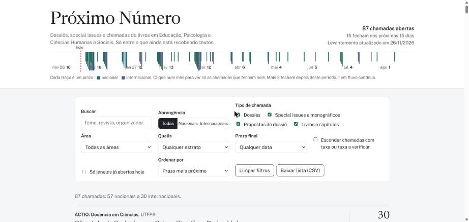
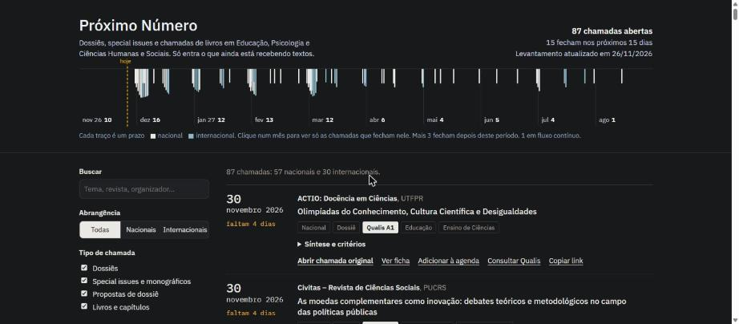
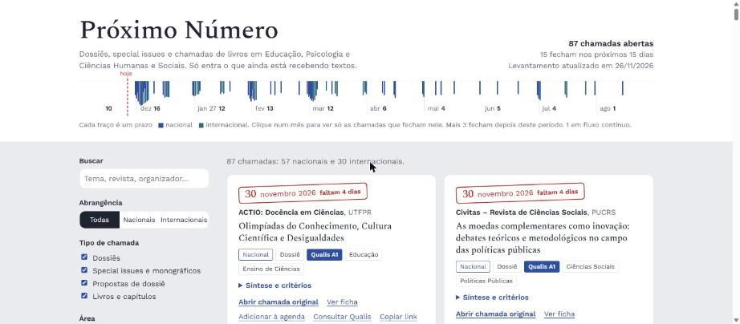

A · Catálogo
Faixa azul-tinta com a régua de prazos, filtros à esquerda e o prazo como data grande. É o visual publicado hoje.
Abrir modelo AQuatro direções visuais para o mesmo site, com os mesmos dados e filtros. Abra cada uma, compare e diga qual vira a versão oficial.
Faixa azul-tinta com a régua de prazos, filtros à esquerda e o prazo como data grande. É o visual publicado hoje.
Abrir modelo A
Claro e bibliográfico: cada chamada é uma linha de sumário, com o prazo à direita como número de página. Filtros numa faixa no topo.
Abrir modelo B
Escuro e compacto, como um painel de partidas. A régua de prazos fica maior e as datas usam algarismos de largura fixa.
Abrir modelo C
Fichas em duas colunas com um carimbo de prazo em cada uma, como numa secretaria. Vê mais chamadas de uma vez.
Abrir modelo D